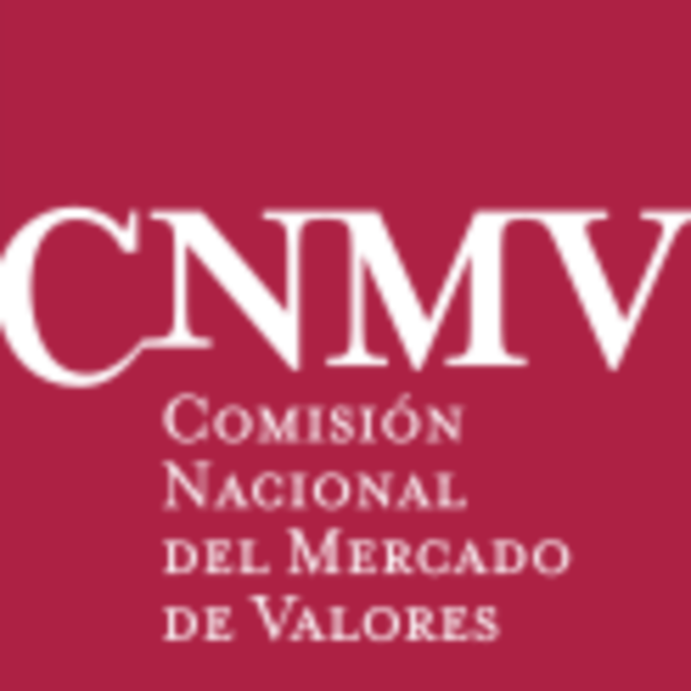

Ficha orbital España · CNMV
- Autoridad supervisora
- Comisión Nacional del Mercado de Valores
- Abreviatura
- CNMV
- Sitio web oficial
- www.cnmv.es
- Reclamaciones
- Servicio de Reclamaciones de la CNMV
- Información al inversor
- Portal del inversor
Esta ficha independiente enlaza recursos oficiales de la CNMV para comprobar entidades e informarse sobre riesgos. No está publicada, certificada ni avalada por la CNMV y no constituye asesoramiento de inversión.
A. Advertencias al inversor
B. Supervisión y actuaciones
Información oficial sobre la actividad supervisora de la CNMV
C. Entidades autorizadas y registros oficiales
Consultas a los registros oficiales
Compare el nombre, el sitio web y los datos de contacto: la identidad de una entidad autorizada puede ser suplantada.
D. Entidades no autorizadas
Advertencias sobre entidades y sitios web
La ausencia de una advertencia no demuestra que una entidad esté autorizada ni que una inversión sea segura.
E. Informes y publicaciones
F. Estadísticas de los mercados
G. Fraude, suplantación de identidad y phishing
Información y protección del inversor
Utilice los datos de contacto oficiales, no los incluidos en mensajes sospechosos. No comparta contraseñas ni códigos de acceso.